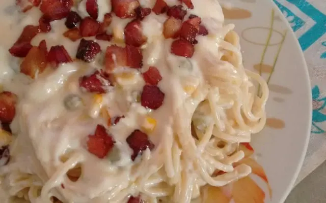

Uma receita Clássica e deliciosa
A macarronada italiana é uma receita tradicional, saborosa e muito apreciada. Nesta página você encontrará os ingredientes, o modo de preparo e algumas dicas para deixar seu prato ainda melhor

Ingredientes
- Macarrão
- Presunto
- Queijo
- Molho de tomate
Preparo
- Cozinhe o macarrão em água fervente.
- Em uma panela, aqueça o molho de tomate e adicione o presunto e o queijo.
- Misture bem e desligue o fogo.
- Combine o macarrão cozido com o molho e sirva quente.
Dicas
Use queijo ralado
O queijo ralado dá um sabor especial e melhora a finalização do prato
Capriche no molho
Um molho bem temperado faz toda a diferença no resultado final
Sirva quente
A macarronada fica muito mais saborosa quando servida logo após o preparo